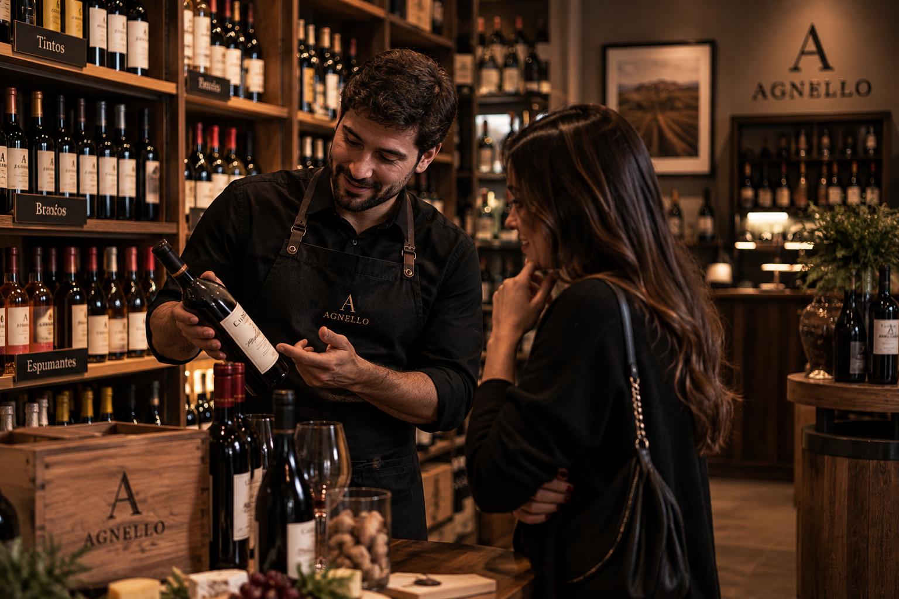
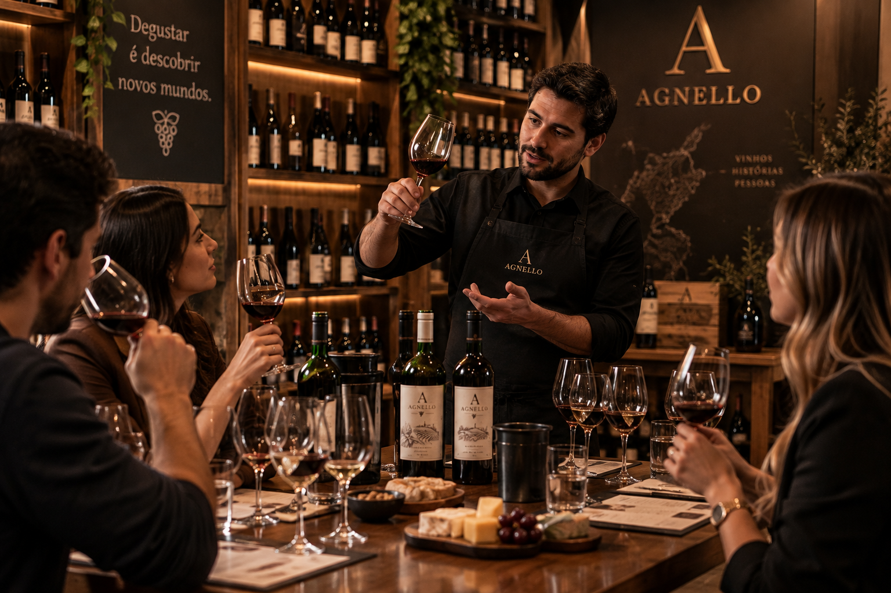
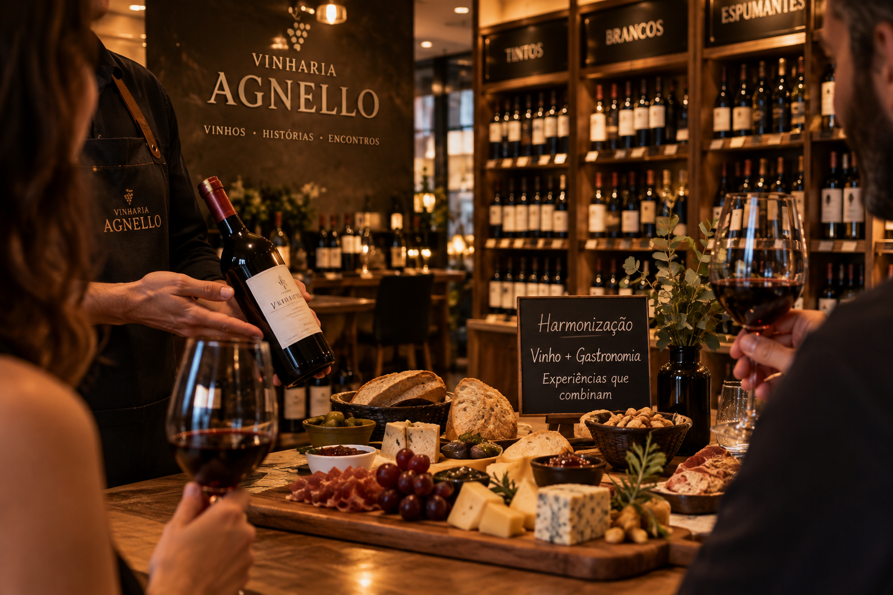
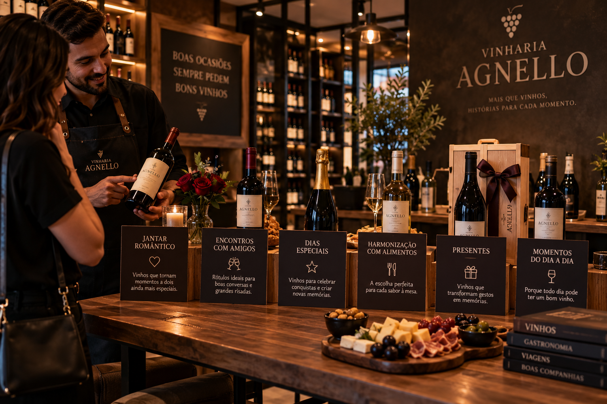
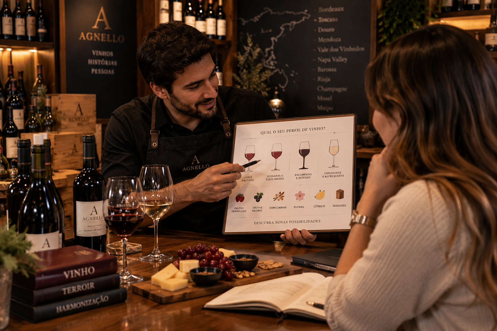
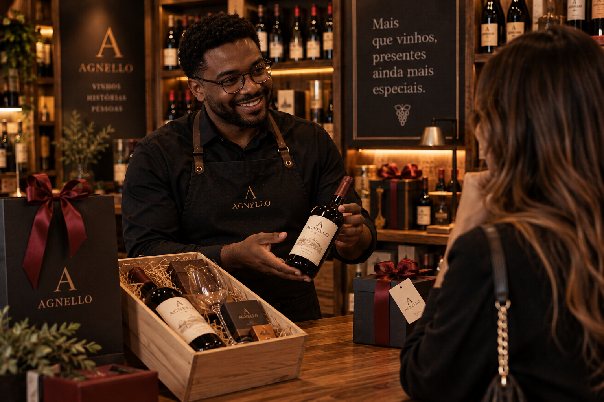
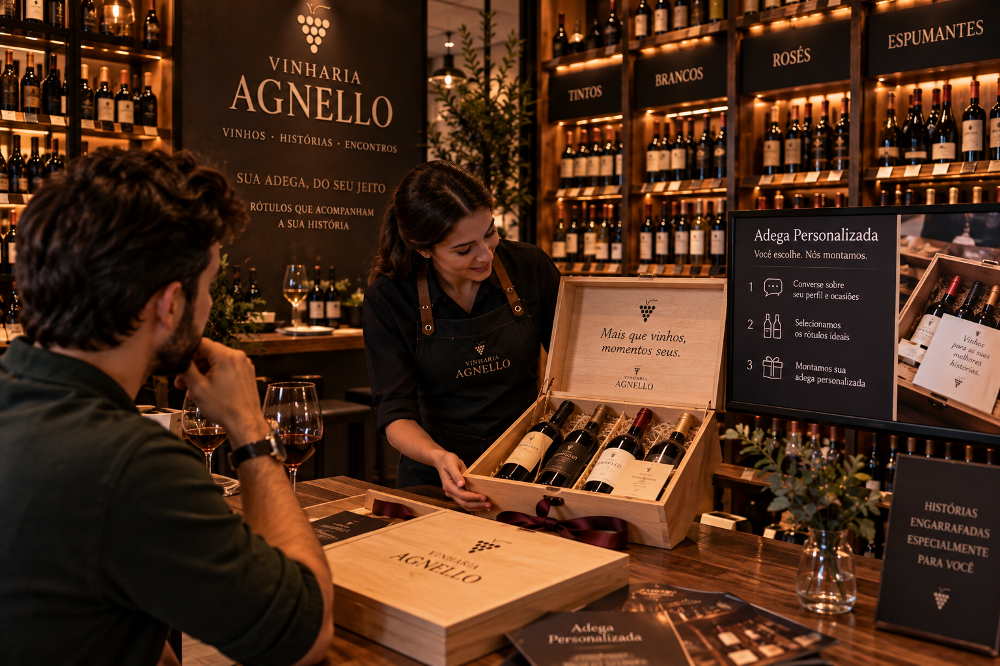
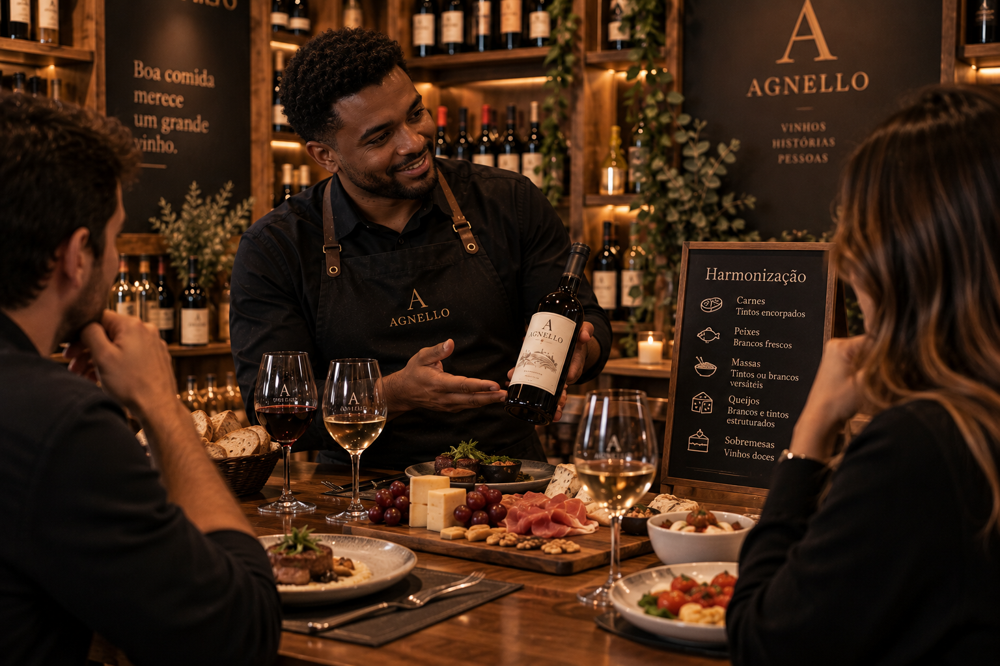

Na Vinharia Agnello, cada escolha começa entendendo o que você procura. Nossa equipe está preparada para orientar na escolha do vinho de acordo com seus gostos, a ocasião, a harmonização desejada e o momento que pretende celebrar. Mais do que apresentar rótulos, nosso atendimento busca tornar a escolha mais simples e agradável. Conversamos sobre as características de cada vinho, suas uvas, regiões e estilos, ajudando você a encontrar uma opção que realmente combine com o que procura. Seja para um jantar especial, uma comemoração ou simplesmente para descobrir um novo vinho, você pode contar com a experiência da Agnello para encontrar o rótulo ideal. Aqui, cada escolha é acompanhada de conhecimento, atenção e cuidado.

Na Vinharia Agnello, a degustação guiada é um convite para conhecer o vinho de uma maneira mais próxima e envolvente. Durante a experiência, nossa equipe apresenta diferentes rótulos, explicando suas características, aromas, sabores e particularidades. A cada taça, os participantes são convidados a observar, experimentar e perceber as diferenças entre os vinhos, enquanto descobrem mais sobre suas uvas, regiões e estilos. A experiência também pode ser acompanhada de queijos e outros sabores que ajudam a explorar diferentes possibilidades de harmonização. Mais do que provar novos rótulos, a degustação guiada é uma oportunidade de ampliar o conhecimento sobre vinhos, descobrir novos sabores e tornar cada taça uma experiência de descoberta.

Na Vinharia Agnello, acreditamos que vinho e gastronomia podem criar experiências ainda mais especiais quando combinados de maneira equilibrada. Nossa equipe apresenta diferentes possibilidades de harmonização, considerando os sabores, aromas e intensidade dos pratos para encontrar rótulos que valorizem cada refeição. Durante a experiência, você pode descobrir como diferentes uvas, estilos e características do vinho interagem com carnes, queijos, massas, sobremesas e outros alimentos. A proposta é explorar novas combinações e descobrir como pequenas escolhas podem transformar uma refeição. Mais do que seguir regras prontas, a harmonização é uma oportunidade de experimentar, conhecer novos sabores e encontrar combinações que façam sentido para cada ocasião.

Na Vinharia Agnello, acreditamos que cada momento pede um vinho diferente. Por isso, nossa equipe ajuda você a encontrar a opção que melhor combina com a ocasião, seja um jantar romântico, uma celebração especial, um encontro entre amigos ou simplesmente um momento para apreciar um bom vinho. Consideramos o perfil de quem vai beber, o ambiente, o tipo de ocasião e até mesmo a experiência que você deseja proporcionar. Assim, a escolha deixa de ser apenas sobre uma garrafa e passa a fazer parte do momento. Conte-nos a ocasião. Nós encontramos o vinho para acompanhá-la.

Na Vinharia Agnello, você pode descobrir quais tipos de vinho mais combinam com o seu paladar. A experiência começa com uma conversa sobre suas preferências, como os sabores que você aprecia, a intensidade que procura e os estilos de vinho que mais despertam seu interesse. A partir dessas informações, nossa equipe apresenta diferentes possibilidades e explica as características de cada uma, ajudando você a conhecer melhor as diferenças entre vinhos leves, encorpados, frutados, aromáticos e outros estilos. A proposta é transformar a escolha em um momento de descoberta, permitindo que você compreenda melhor o próprio paladar e encontre novos rótulos para experimentar. Na Agnello, conhecer vinho também é descobrir o que combina com você.

Escolher um presente pode ser ainda mais especial quando ele combina com a pessoa que irá recebê-lo. Na Vinharia Agnello, nossa equipe ajuda você a encontrar vinhos e combinações que tornam cada ocasião única. Seja para celebrar uma conquista, agradecer alguém, comemorar uma data especial ou simplesmente surpreender, buscamos entender a ocasião e o perfil de quem receberá o presente. A partir disso, podemos sugerir diferentes rótulos, acessórios e opções de composição para criar um presente personalizado. Também oferecemos opções de embalagens e kits, pensados para transformar a escolha do vinho em uma experiência completa e especial. Na Agnello, cada presente é escolhido para transformar uma boa intenção em um momento memorável.

Na Vinharia Agnello, sua adega pode contar uma história que combina com você. Nossa equipe entende suas preferências, seus hábitos e os momentos em que você costuma apreciar um bom vinho para criar uma seleção personalizada. A partir desse perfil, indicamos rótulos que equilibram diferentes estilos, ocasiões e possibilidades de harmonização, ajudando você a construir uma adega completa e versátil. Seja para começar sua primeira coleção ou renovar os rótulos que já fazem parte dela, cuidamos de cada escolha para que sua adega tenha personalidade, variedade e, acima de tudo, vinhos que façam sentido para os seus momentos. Sua adega, seu estilo, suas histórias.

Na Vinharia Agnello, acreditamos que uma boa harmonização vai muito além de seguir regras prontas. Cada prato possui sabores, aromas e intensidades diferentes, e o vinho certo pode valorizar essas características e tornar a experiência à mesa ainda mais especial. Por isso, nossa equipe oferece uma orientação personalizada para ajudar você a encontrar o vinho que melhor combina com o que pretende servir. A partir do prato, dos ingredientes e das características que deseja destacar, apresentamos diferentes possibilidades de rótulos e explicamos como cada vinho pode complementar a refeição. Durante a experiência, também consideramos as preferências de quem irá apreciar o vinho. Afinal, uma harmonização não precisa seguir apenas combinações tradicionais: ela também pode ser uma oportunidade para experimentar, descobrir novos sabores e encontrar combinações que tenham a ver com o seu próprio paladar. Seja para um jantar especial, uma reunião com amigos ou uma ocasião comemorativa, a Agnello ajuda você a escolher o vinho que transforma uma boa refeição em uma experiência completa.
Se você tem dúvidas sobre esse universo, assista a este vídeo e descubra mais sobre vinhos, seus estilos e características.